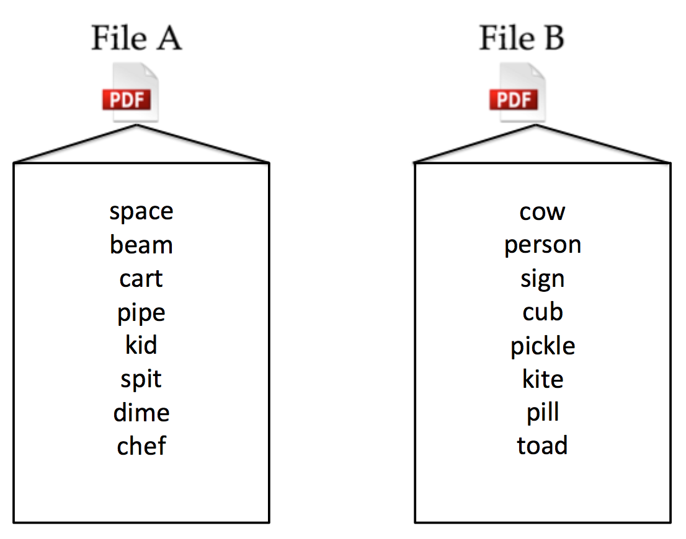
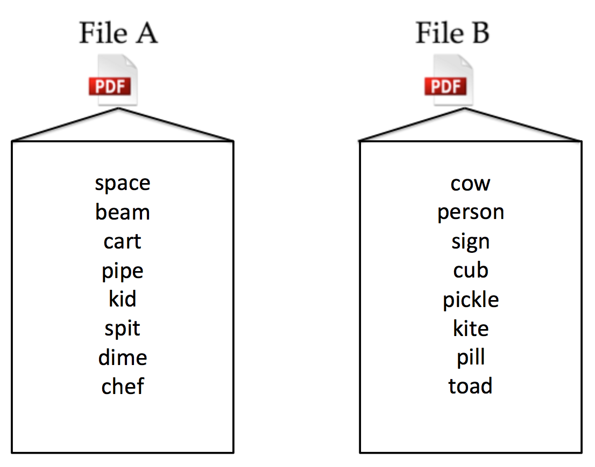
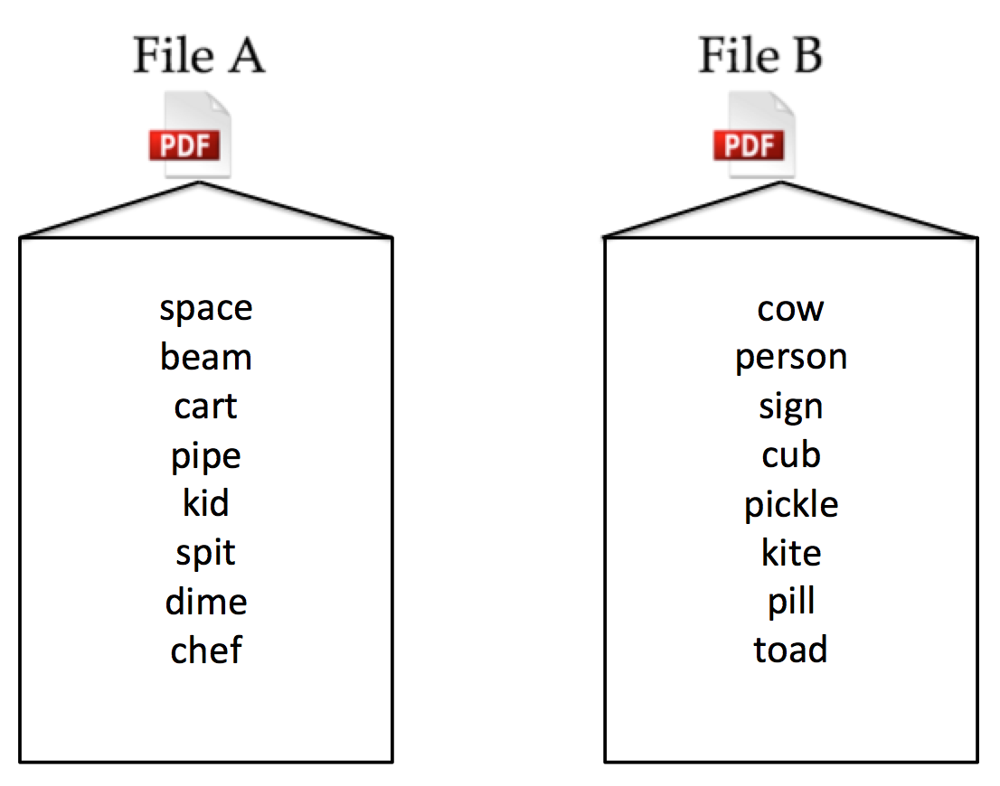

In this experiment you will be studying and recalling words in an online repository. This expriment will take approximately 20 minutes.
Legal information: By answering the following questions, you are participating in a study being performed by cognitive scientists in the Stanford Department of Psychology. If you have questions about this research, please contact us at stanfordpsych254@gmail.com. You must be at least 18 years old to participate. Your participation in this research is voluntary. You may decline to answer any or all of the following questions. You may decline further participation, at any time, without adverse consequences. Your anonymity is assured; the researchers who have requested your participation will not receive any personal information about you. We have recently been made aware that your public Amazon.com profile can be accessed via your worker ID if you do not choose to opt out. If you would like to opt out of this feature, you may follow instructions available here.
In this experiment you will be studying files in an online repository. There are several PDF files in each repository. Each PDF file contains a list of commonly used nouns. Some lists have 8 words and others have 2 words.
In this experiment you will be studying files in an online repository. There are several PDF files in each repository. Each PDF file contains a list of 8 commonly used nouns.

You will go through 8 trials of a study and test phase. In each trial you will study two files, File A and File B. You will need to remember both files for a later test. First you will study all words in File A for 15 seconds. Then you will be directed to either Save or Not Save File A depending on the instructions given by the computer.
If you are instructed to Save, you will save the file by clicking the save button. Because you are saving this file, you will have access to it later on. This will allow you the ability to re-study File A before the final test of File A words.
If you are instructed to Delete, you will delete the file by clicking the delete button. Because you are deleting this file, you will not have access to it later on. This will deny you the ability to re-study File A before the final test of File A words.
You will then study the words in File B and delete this File. Next you will receive the final tests for both files; first File B words and then File A words. However, if you were directed to Save File A, you will have the chance to re-study File A before the final test of words in File A. You will go through eight trials of this sequence. After each trial you will play tetris for 1 minute. Here is an overview of one entire trial. Press begin to start the first trial.
Press 'Enter' to separate numbers
Enter the words you remember from File B. Press 'Enter' or 'Return' between words.
Press 'Enter' to separate words
Enter the words you remember from File A. Press 'Enter' or 'Return' between words.
Press 'Enter' to separate words
You're finished - thanks for participating! Submitting to Mechanical Turk...
This study is about how saving can benefit learning of new material. Saving a file can reduce interference when learning information from a new file. In this experiment we tested your memory of two different files under the hypothesis that recall for file B would increase if one is allowed to save file A, and this recall also depends on the number of words in File A.
 
